💻 PC で管理する人の説明書
SEAM 商品登録 — メーカーの商品データを取り込んで、写真を集めて、ネットのお店に出す
パソコンが苦手でも OK。1 日目は 2 章と 4 章だけ読めば動かせます
0PC 担当の仕事は 4 つ
| いつ | やること | どこで |
|---|
| メーカーから商品データが届いたら | 取り込む（CSV / Excel をアプリに入れる） | 取り込み タブ |
| 毎日 | 進捗を見る・スマホ係の名前を足す・写真を検品する | 進捗 / 設定 / 検品 タブ |
| 「注意」の赤い数字が出たら | JAN がかぶった商品を決める | 注意 タブ |
| ネットのお店に出すとき | 出力する（CSV と写真） | 出力 タブ |
こわがらなくて OK取り込みは「取り消す」で元に戻せます。写真は消さない限り残ります。わからないときは 11 章へ。
1ログインと名前えらび
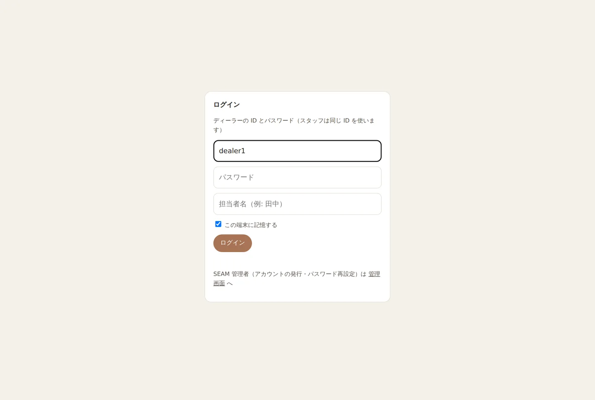
https://seam.site/pim/import.html を開いて、ID とパスワードを入れる
- パソコンのブラウザ（Chrome か Edge がおすすめ）で https://seam.site/pim/import.html を開く。
- お店の ID とパスワードを入れて ログイン。
- 名前の一覧が出たら自分の名前をタップ（🔒 の人は PIN）。一覧がなければ「担当者名」に自分の名前。
ID・パスワードは「1 つのお店に 1 つ」スマホ係も同じ ID を使います。だれが何をしたかは「名前」で分けます。人が辞めたら 設定 → パスワードを変更（全員がログインし直しになります）。
2メーカーの CSV を取り込む（5 ステップ）
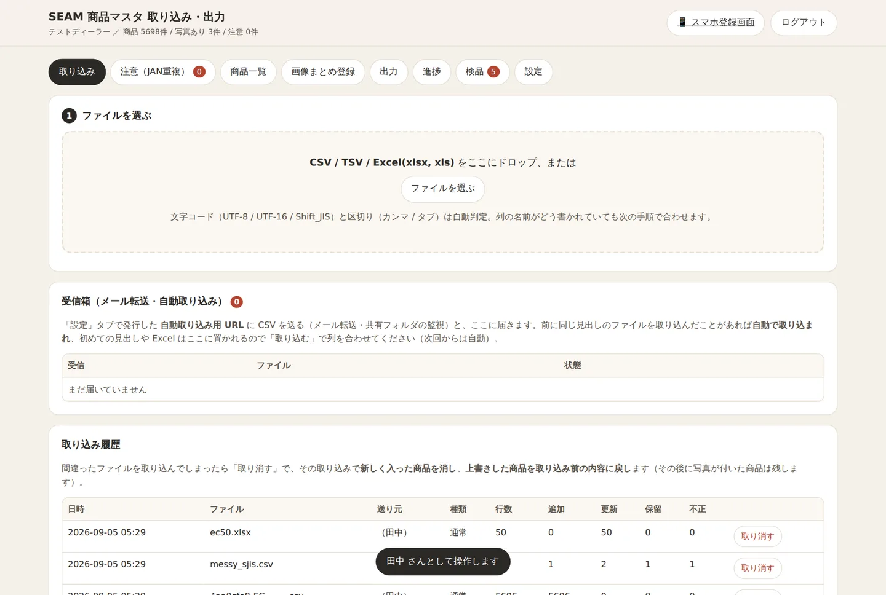
① ファイルをここにドロップ（CSV / Excel どちらでも。文字コードは自動判定）
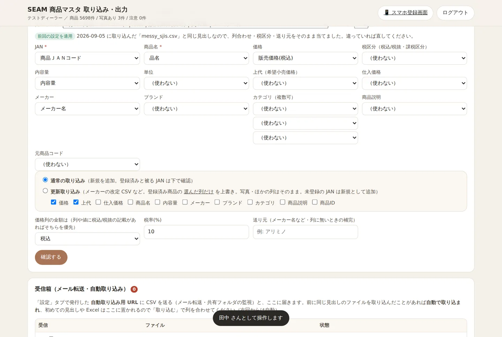
② 列を合わせる。自動で当たっています。「JAN」と「商品名」だけは必ず合っているか見る
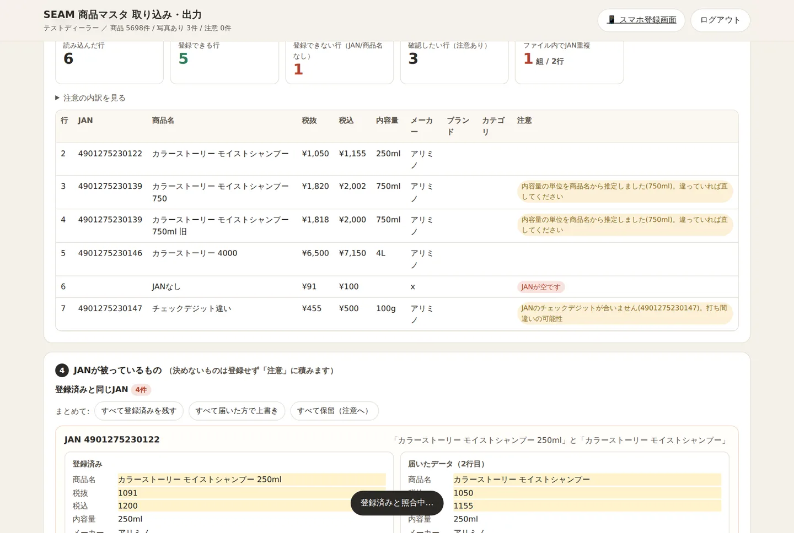
③ 確認。読み込んだ行数・登録できる行・注意の数
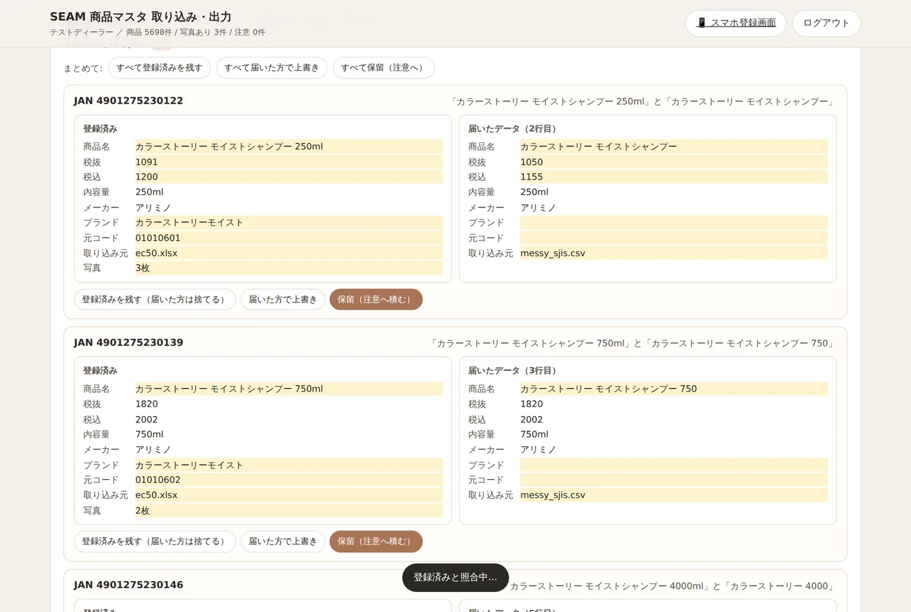
④ JAN がかぶっているものは「どちらを残すか」を決める（決めなければ「注意」にたまる）
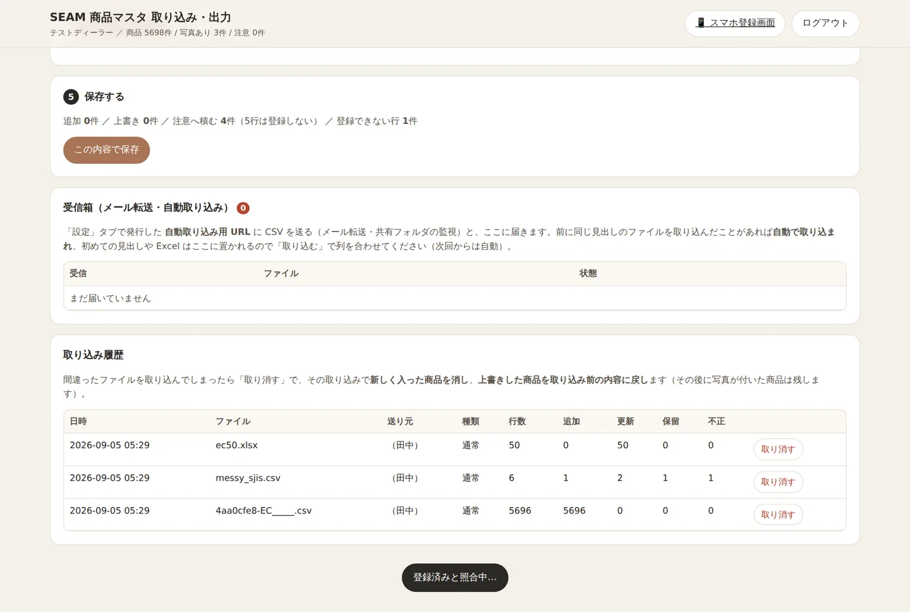
⑤ 「この内容で保存」
- ファイルを選ぶ … メーカーから来た CSV か Excel をドラッグ＆ドロップ。
- 列を合わせる … 「JAN」と「商品名」が正しい列になっているか見る。価格の列があれば「税込か税抜か」を選ぶ。送り元（メーカー名）を入れる。
「前回の設定を適用」と出たら、前と同じファイルなのでそのままで OK。
- 確認する … 表を見て、JAN や名前がずれていないか確かめる。
- JAN がかぶっているもの … 「登録済みを残す」「届いた方で上書き」「保留」を選ぶ。迷ったら 保留（あとで 注意 タブで決められます）。
- この内容で保存 … 「完了: 追加 ○件」と出れば終わり。
更新取り込み（値段だけ変わった CSV など）
「更新取り込み」を選び、上書きする列（価格・上代 など）に ✓ を入れて保存。写真やほかの列はそのまま残ります。
メーカーごとに列の名前がバラバラでも OK「商品ＪＡＮコード」「JANコード」「バーコード」… どれでも自動で JAN と判断します。値段の「1,100」「¥1100」「1100円」も読めます。
保存したあとで「まちがえた！」取り込み履歴の 取り消す で元に戻せます（10 章）。
3「注意」（JAN がかぶった）を決める
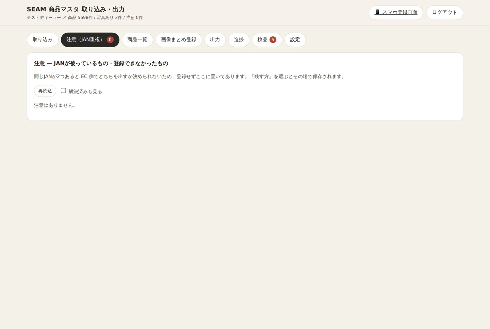
注意タブ。左が登録済み、右が届いたデータ。ちがうところが黄色
同じ JAN（バーコード）の商品が 2 つあると、ネットのお店でどちらを出すか決められません。だから登録せずに「注意」に置いてあります。
| ボタン | 意味 | こんなとき |
|---|
| 登録済みを残す | 今のままにする | 届いたデータが古い・まちがっている |
| 届いた方で上書き | 新しいデータにする | メーカーの改定（値段変更など） |
| この行を採用 | 同じファイルに 2 行あるとき、どの行にするか | ふつうは最後の行（新しい方） |
| 閉じる | 何もしない | 見たけど問題なし |
「商品名が似ている」の注意「エマルジョン」と「エマルジョン+」のように、名前がほぼ同じで JAN がちがうものです。別の商品なら「確認した」で閉じるだけ。同じ商品を 2 回登録していたら、商品一覧で片方を削除します。
4商品一覧（さがす・なおす・まとめて変更・ラベル印刷）
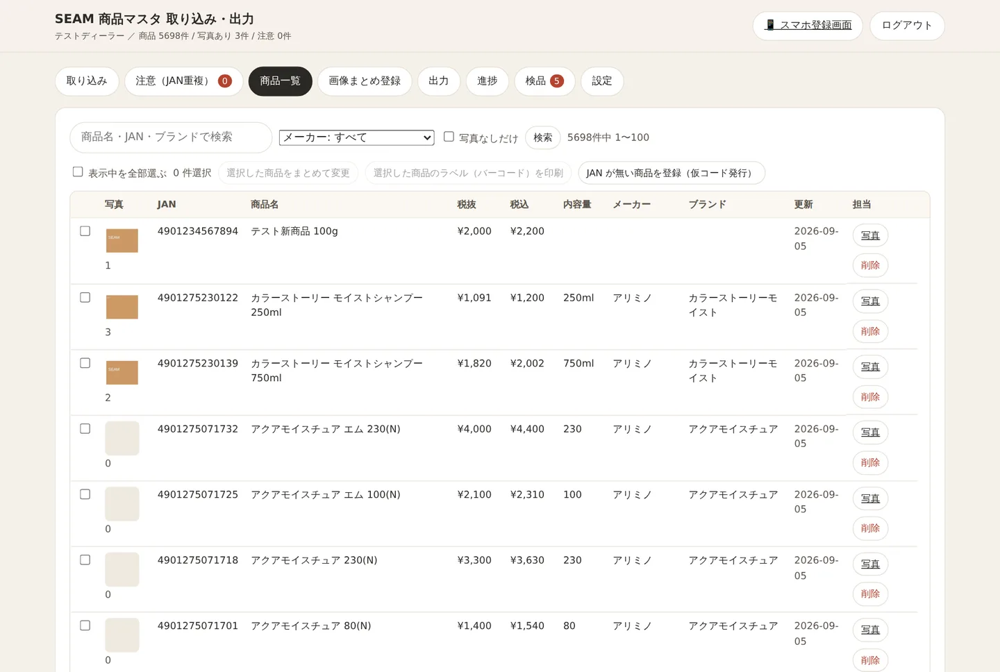
検索・メーカーで絞る・「写真なしだけ」
| やりたいこと | やり方 |
|---|
| 商品をさがす | 上の欄に 商品名・JAN・ブランド を入れて Enter。 |
| 写真がまだの商品だけ見る | 「写真なしだけ」に ✓。 |
| 1 つの商品をなおす／写真を見る | 行の「写真」→ スマホ画面が開きます（PC でも同じ操作ができます）。 |
| たくさんの商品のメーカー名などを一度に変える | 左の □ に ✓ → まとめて変更 → 項目と値を入れて「変更する」。 |
| バーコードのシールを印刷する | □ に ✓ → ラベル（バーコード）を印刷。A4 のラベルシールに印刷して商品に貼ります。JAN が無い商品の「仮コード」もこれで貼れます。 |
| JAN が無い商品を登録する | JAN が無い商品を登録（仮コード発行） → 商品名を入れる。20 で始まる 13 けたの仮コードがつきます。 |
| 商品を消す | 行の「削除」。写真も消えるので注意。 |
5メーカーの画像フォルダをまとめて登録
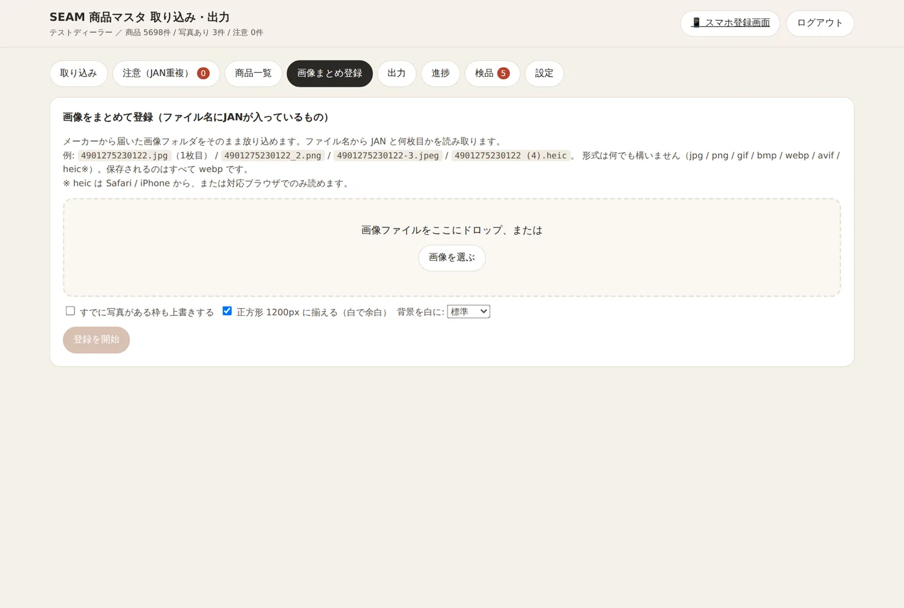
ファイル名に JAN が入っていれば、そのまま放り込める
- メーカーから届いた画像フォルダの中身を、まとめてドロップ。
- ファイル名から JAN と何枚目かを自動で読みます。
例: 4901275230122.jpg（1枚目）、4901275230122_2.png（2枚目）。
- 「登録できるもの ○件」を見て 登録を開始。すべて正方形・白背景・webp にそろえて保存されます。
「未登録の JAN」と出たら先に商品データ（CSV）を取り込んでから、画像を入れてください。
6出力する（EC 向け CSV・写真 zip）
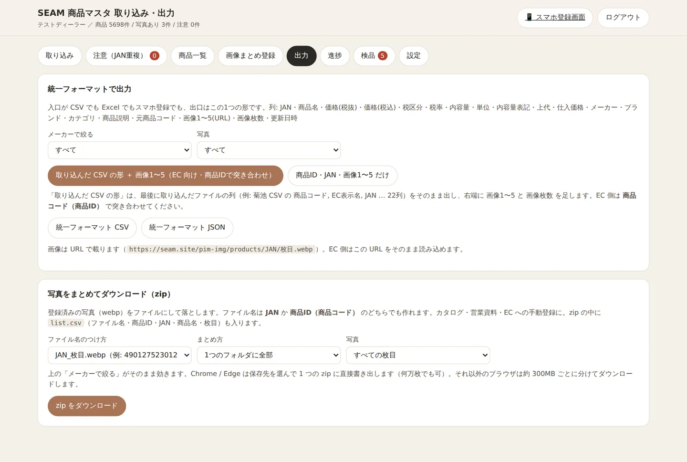
EC 向けは「取り込んだ CSV の形 ＋ 画像1〜5」
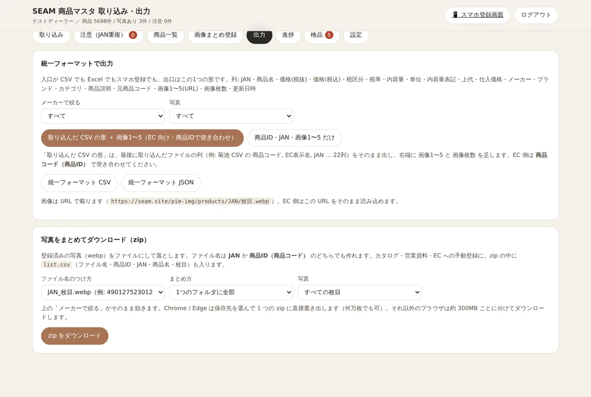
写真をまとめて zip。ファイル名は JAN か 商品ID
| ボタン | 何が出る | だれに渡す |
|---|
| 取り込んだ CSV の形 ＋ 画像1〜5 | メーカーの CSV と同じ列に、写真の URL を 5 列足したもの | ネットのお店（EC）のエンジニア。商品コード（商品ID）でつなぎます |
| 商品ID・JAN・画像1〜5 だけ | 写真の URL だけ | EC 側がもう商品を持っているとき |
| 統一フォーマット CSV / JSON | 決まった列（JAN・商品名・税抜・税込・内容量…） | ほかのシステム・分析用 |
| zip をダウンロード | 写真そのもの（webp）。ファイル名を JAN か 商品ID で選べる | カタログ・営業資料・手動でアップロードする人 |
毎晩自動で EC に渡すには設定 → EC 連携 の「連携キーを発行」。出てきた URL を EC のエンジニアに渡すだけで、手でダウンロードしなくてよくなります（9 章）。
7進捗と日報
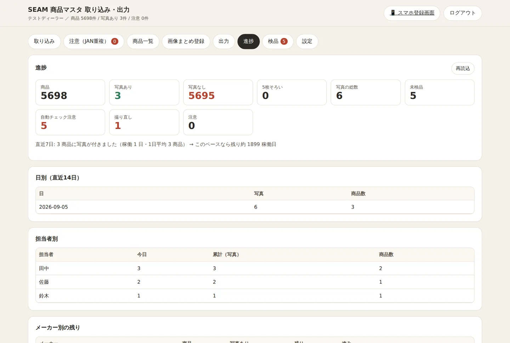
商品数・写真あり/なし・担当者別・メーカー別の残り・残り日数
- 写真なし の数が、残りの仕事の量です。
- 残り約 ○ 稼働日 は、直近 7 日のペースから計算。人を増やすか決める目安に。
- 担当者別 で、だれが何枚撮ったかが分かります（スマホ係の名前が正しく登録されていることが前提）。
- 日報 … 設定 → 日報・通知メール にアドレスを入れて「毎朝送る」に ✓ すると、毎朝 7 時にメールが届きます。「昨日の日報を見る」で今すぐ確認もできます。
8写真の検品
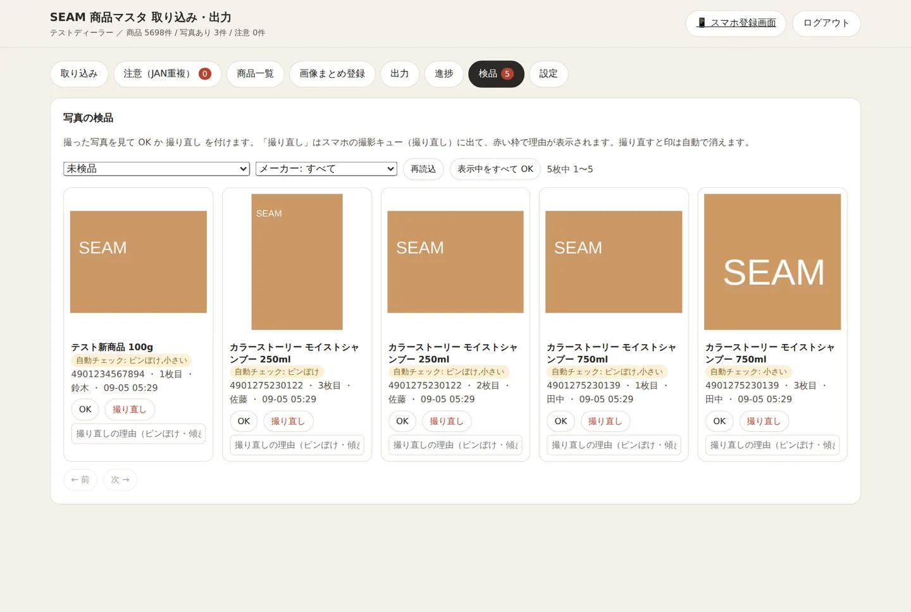
OK か 撮り直し を付ける。撮り直しはスマホ係の画面に赤く出る
- 検品タブで 未検品 の写真を見る。まず 「自動チェックで注意あり」 から見ると速い。
- よければ OK。ダメなら理由（ピンぼけ・傾き・影 など）を入れて 撮り直し。
- 撮り直しはスマホ係の画面に赤い枠で出て、撮り直すと自動で消えます。
- 問題がなければ 表示中をすべて OK でまとめて。
「同じ写真が別の商品に」検品タブの絞り込みで見られます。同じ写真が 2 つの商品に入っている＝撮り間違いの疑い。正しい方を残して、まちがった方の写真を削除してください。
9設定（担当者・辞書・アカウント・自動取り込み）
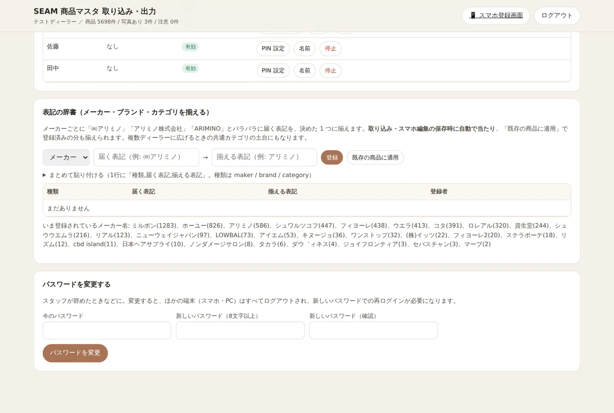
担当者一覧: スマホ係の名前を登録。PIN は任意
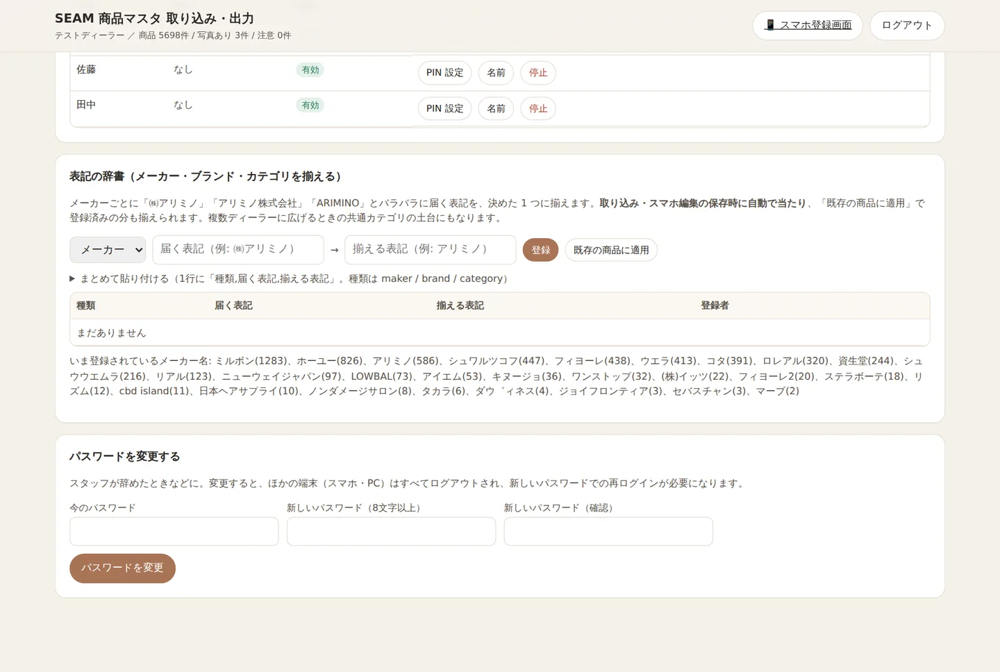
表記の辞書: 「㈱アリミノ」→「アリミノ」のように揃える
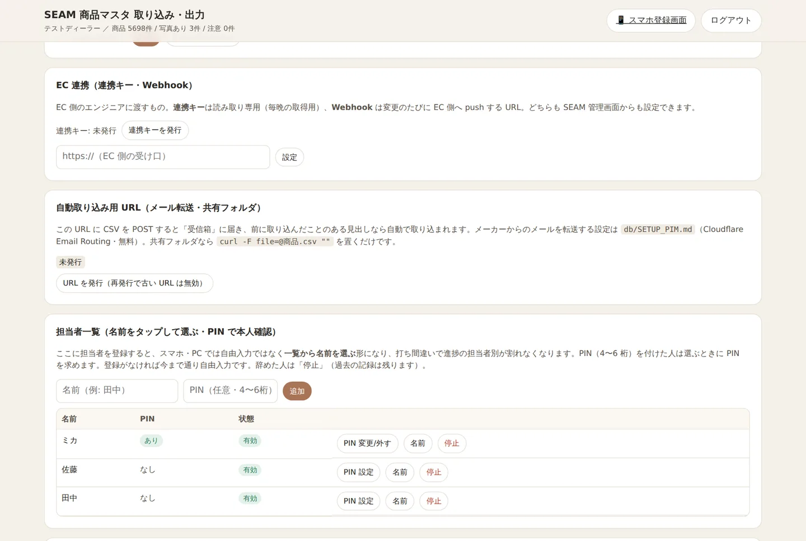
日報メール・EC 連携・自動取り込み用 URL
担当者一覧（一番大事）
- スマホ係が来る前に、名前を登録する（名前 → 追加）。アルバイトさんが来るたびに足します。
- 登録すると、スマホでは名前をタップして選ぶだけになり、打ち間違いがなくなります。
- PIN（4〜6 けた）を付けると、その人だけがその名前を使えます。共用のスマホで役立ちます。
- 辞めた人は「停止」。過去の記録は残ります。
- だれかに PIN を付けたあとは、担当者一覧の変更（追加・停止・PIN）は PIN 付きの人が自分の名前を選んでから行います（PIN を外して他人になりすませないための決まり）。PC 担当の自分にも PIN を付けておくとスムーズです。
注意1 人でも登録すると、一覧にない名前では登録できなくなります。自分（PC 担当）の名前も入れてください。
表記の辞書
メーカーごとに「㈱アリミノ」「アリミノ株式会社」とバラバラに来る表記を 1 つに揃えます。登録すると、これから取り込む分には自動で当たり、「既存の商品に適用」で今ある分も揃います。
アカウント
| 項目 | 説明 |
|---|
| ディーラー名・ログイン ID | お店の名前と ID。ID を変えると全員が新しい ID でログインし直しです。 |
| 日報・通知メール | 毎朝の日報の送り先。カンマ区切りで 10 件まで。 |
| EC 連携（連携キー・Webhook） | EC のエンジニアに渡すもの。「連携キーを発行」→ 出た URL を渡す。変更のたびに知らせたいときは Webhook に EC 側の URL。 |
| 自動取り込み用 URL | メーカーの CSV をメールで転送するだけで取り込む仕組み。URL を発行して SEAM に伝えると、メールの転送先を作ってもらえます。届いた CSV は取り込みタブの 受信箱 に入り、2 回目からは自動で取り込まれます。 |
| パスワードを変更 | 人が辞めたときなど。全員がログインし直しになるので、新しいパスワードをみんなに伝えてから。 |
10まちがえたとき（取り消し）
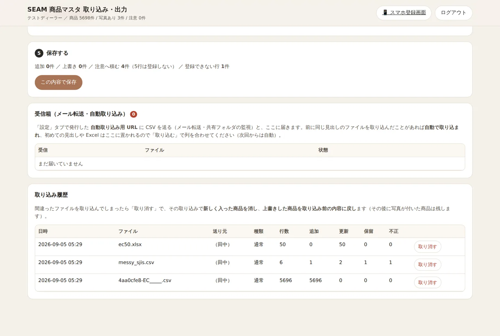
取り込み履歴の「取り消す」
- 取り込みをまるごと戻す … 取り込みタブの一番下「取り込み履歴」→ その行の 取り消す。新しく入った商品は消え、上書きした商品は前の内容に戻ります。写真が付いた商品は消しません。
- 1 つの商品だけ直す … 商品一覧で「写真」→ スマホ画面で「商品情報を編集」。
- まちがえて写真を消した … 戻せません。もう一度撮ってください。
11困ったとき
| こまった | どうする |
|---|
| ログインできない | ID・パスワードのスペルを確認。10 回まちがえると 15 分ロック。SEAM に「パスワード再設定」を頼めます。 |
| 「担当者名が登録されていません」 | 設定 → 担当者一覧に自分の名前を足す → 「担当者を選び直す」。 |
| CSV を入れたのに「JAN が読めません」が多い | 「列を合わせる」で JAN の列がちがう列になっている。プルダウンで直す。 |
| 値段が 10 倍・1/10 になっている | 税込/税抜のえらび間違いではなく、列がちがう可能性。確認画面の表で見て、取り消して入れ直す。 |
| Excel を入れたら文字化け | Excel（.xlsx）はそのまま入れられます。CSV は自動判定しますが、まれに Shift_JIS/UTF-8 で化けたら Excel で開いて .xlsx で保存し直す。 |
| スマホ係から「写真が入らない」 | 商品がまだ取り込まれていない（未登録）か、名前が担当者一覧にない。両方確認。 |
| 「注意」が何十件も出た | 同じ CSV を 2 回入れた可能性。「すべて登録済みを残す」で一括処理できます。 |
| 受信箱に「未処理」がたまる | 初めての見出しのファイル。「取り込む」で一度列を合わせれば、次から自動になります。 |
| EC 側が「画像が表示されない」 | 画像 URL は誰でも見られます。URL をブラウザで開いて出るか確認。出なければ SEAM へ。 |
SEAM に連絡するとき「お店の ID」「何をしたか」「出たメッセージ」の 3 つを伝えると早いです。
12運営の週間チェックリスト
- 【毎朝】日報メールか 進捗タブ を見て、写真なしの数と残り日数を確認した
- 【毎朝】今日来るスマホ係の名前が 担当者一覧 にある
- 【毎日】注意タブの赤い数字を 0 にした
- 【毎日】検品タブで「自動チェックで注意あり」を見て、必要なら撮り直しにした
- 【届いたら】メーカーの CSV を取り込んだ（受信箱も確認）
- 【週 1】商品一覧の「写真なしだけ」で、残っているメーカーを確認し、スマホ係に分担を伝えた
- 【週 1】出力タブから EC 向け CSV を出して、EC のエンジニアに渡した（連携キーがあれば不要）
- 【人の出入り】辞めた人は 担当者一覧 で停止。パスワードを知っている人が辞めたらパスワードを変更